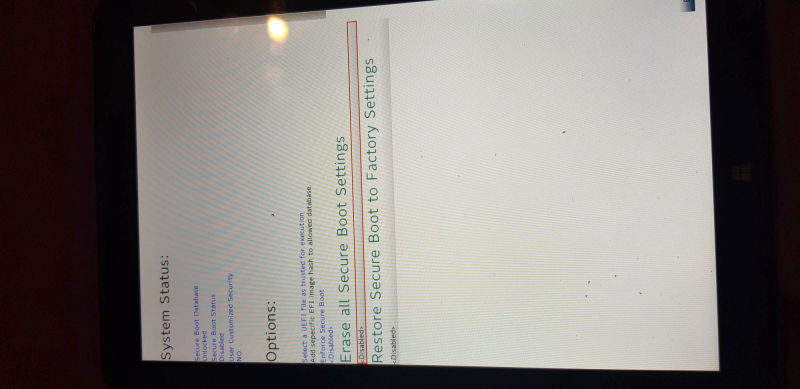
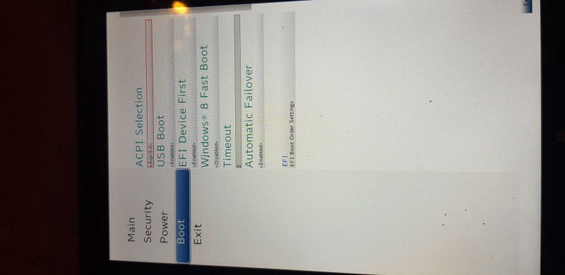

(VOL UP + Power)
Tap on Secure Boot Options
Tap on Secure Boot Options
Make Sure Secure Boot Is Disabled in Blue text, if not, Wipe Secure Boot Settings
 Tap SCU to go to Bios Settings
Tap SCU to go to Bios SettingsGo to Boot - Make sure USB Booting is Enabled
After trying to follow several guides I found online, I finally managed to install and boot 64 bit Ubuntu, this will most likely work with other GRUB EFI based distros but hardware support may vary, here is my guide using the latest stable Ubuntu release (20.04). I will try to make it as easy to follow as possible, good luck!
Tap SCU to go to Bios Settings